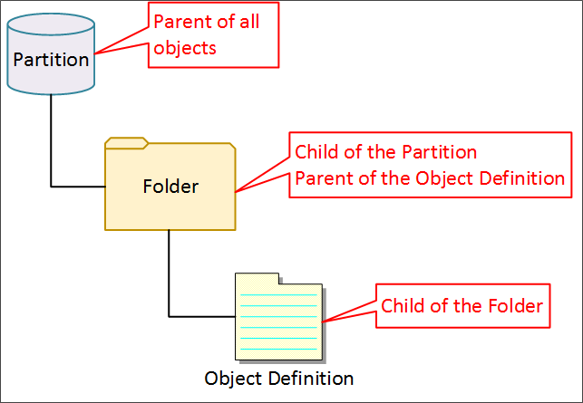

Getting Started With Implementation
Process Director provides business users with a web-based software solution with the advanced no-code/low-code capabilities they need to provide greater agility and visibility into their business processes, and create applications quickly. Built on an integrated document management and workflow automation system, Process Director manages, automates and reports on an organization’s business processes and provides powerful storage, categorization and search technologies for all documents, electronic forms (Forms), and workflow processes.
This document is the Implementer’s Reference Guide for Process Director. To install the product, refer to the Process Director Installation Guide. For an overview of all the documents available, please refer to the BP Logix documentation web site.
This topic provides a quick overview of the product terminology, how to get started, and steps to first login. Subsequent topics will get you started on your way to understanding how Process Director features and components can be utilized in your organization.
Intended Document Audience
This Implementer’s Reference Guide describes the advanced features and customization options available for Process Director and contains the information necessary to build your business processes in Process Director. It is intended as a reference for the users that will be implementing Process Director. The implementers typically are defined as those users that are familiar with the existing business processes inside your company and are familiar with the basic concepts of Process Director, such as Forms, workflow and Knowledge Views.
Examples of creating workflow definitions, Form definitions and Knowledge Views can be found in the Process Director Getting Started Guide. For information on using the product (e.g. uploading files, starting workflows, etc.), refer to the Process Director End User Guide. This document does not address the custom scripting or external APIs that are available for Process Director. Although customization options for Process Director are not required, they are provided to enable the product to perform unique business logic and to integrate into existing systems. Refer to the Process Director Developers Guide for information on the customization options.
Understanding Process Director
Process Director can be used for a variety of functions. It is a content management system with integrated workflow, document management, Forms processing, document imaging, knowledge management, business intelligence and reporting. Throughout all processes, users can be assured of secure access to shared documents, digital content and all data stored in the Process Director database.
What is a process?
A process is a set of tasks, notifications, or activities that are completed in a specific order. In Process Director, a process is modeled using either a Workflow or Process Timeline. So, the term "process" in the context of Process Director, is really a just a generic term for a Workflow or Process Timeline. Both are processes, and the term "process" can be used interchangeably for either Process Timelines or Workflows.
Both Workflows and Process Timelines can implement the Run Process task to initiate a second process. The second process will run parallel with the process that starts it. The process that implements the Run Process task is called the parent process. Similarly, the process that is started by the Run Process task is called the child process.
Any number of child processes can be started by a parent process, and synchronization allows a parent process to wait for the completion of a child process before proceeding. When a process is started, it can optionally contain a copy of all the parent process' references (e.g. document, Forms, etc.) or just a reference to them. Process Timelines can call Workflows as child processes, and vice versa.
So, let's discuss a scenario where a parent/child process would be necessary, and where the Run Process task might be useful.
Let's say that there is a specific process for obtaining approval from the organization's financial analysts, such as a requirement to obtain multiple approvals in a specific order. Then, let's assume that all financial approval processes, whether requests for travel, or capital spending, or expense reimbursement, must be approved by the financial analysts if they exceed a certain amount.
One way to implement this would be to encapsulate Financial Analyst approval into its own process by creating a Workflow or Process Timeline to model it.
Once you have done so, you can create your travel, or expenditure request processes separately. In each of these parent processes, you can use the Run Process task to call the financial analyst approval process as a child process if the amount exceeds the threshold requirement.
By creating processes in this modular fashion, you can re-use a process many times as a child of other processes, rather than repetitively modeling it multiple times in different processes.
Parent and Child Objects
There are a number of places in the documentation where the terms "parent" and "child" will be used in various contexts. In general, these terms refer to a hierarchical system of organization where the parent object is the higher-level object in the hierarchy, and any object that is lower in the hierarchy is called the child. In Process Director the terms "parent" and "child" are used in the following contexts.
Content List: In the Content List, the highest-level object is the Partition. The Partition is the parent object, and all objects contained in the Partition are the child objects of the Partition. Most commonly, the child objects at the root level of the Partition are folders. Each folder is also the parent object of its contents, e.g., a subfolder would be the child object of a root-level parent folder. Every folder in the Content List, in turn, is both a child of its parent folder (or the Partition), and is, at the same time, the parent of its folder contents.
Object Definitions and Instances: Each object definition is the parent of its object instances. For example, every time a Form is submitted, a Form instance is created. All of these Form instances are considered children of the Form definition, which is the parent.
Instances and Attachments: Object instances are the parent object for their child attachments. If you attach a Word document as an attachment to a Form instance, the Form instance is the parent, and the Word document attached to it is the child.
Controls: A number of Form controls, such as the Section control, are containers for other controls. In this context, the Section control is the parent control, and all controls contained in the Section are child controls. Indeed, the Form itself is a container for all of the controls, so the Form is the parent object of the Section control, which is the Form's child.
Process Timelines (Parent Activities): The Process Timeline has an activity type called the Parent activity. The Parent activity is commonly used to create iterating loops in a Process Timeline, but is also used as a container for a set of closely related activities. All of the Process Timeline activities that are subordinate to the Parent activity are child activities. A Parent activity can also contain subordinate Parent activities, which are children of the top-level Parent activity, but are also parents of their subordinate activities.
Process Timelines (Dependencies): The Process Timeline organizes activities by dependency, creating finish-to-start dependencies between activities in order to create a critical path dependency tree. We generally refer to higher level objects in the dependency tree as parents, while lower-level objects are referred to as children.

Content Types
Process Director supports various content types in the database. The term “object” will be used generically throughout this document to refer to one or more of the content types defined below. Each object icon shown is the default, but can be changed during implementation if desired.
|
|
Business Rule
|
Business rules can be defined as simple conditions or sophisticated interrelated rule sets.
|
|
|
Business Value |
A Data Virtualization object that returns a value from an external database, REST Service, or Knowledge View. |
|
|
Case Definition |
The central object of a Case Application that stores all shared case data and identifies the Dashboard used to display the Case folder. |
|
|
Chart |
A chart object graphically displays data. |
|
|
Dashboard |
A user-defined interface object that can display any desired Process Director object in a custom portlet. |
|
|
Data Source
|
A re-usable data source that can connect to an external database.
|
|
|
Document |
Any document or file type that has been uploaded to the server. If the file type is known, the icon displayed will appear as it would in Windows Explorer.
Examples:
Word Document
Excel File
PDF File
Image file
|
|
|
Dropdown Object
|
Content for a dropdown on a Form.
|
|
|
Form |
Electronic form (Form) that can be filled out and submitted online. Completed forms are also stored on the server under the Form definitions with the icon.
|
|
|
Folder |
Objects on the server, including sub-folders.
|
|
|
Goal |
An object that performs a scheduled evaluation of conditions and sets a global system status and/or automatically starts a process based on the result of the scheduled evaluation. |
|
|
Knowledge Views
|
Query window into the database that is able to display objects based on filter criteria.
|
|
|
Process Timeline
|
A Process Timeline Definition is a predefined route for the automation of a process in your environment. Running and completed Timelines are also stored on the server under the Timeline definition. |
|
|
Report |
An report object created with the Advanced Reporting component. |
|
|
Script
|
Custom script for a Form or workflow.
|
|
|
Workflow |
A Workflow definition is a predefined route for the automation of a process in your environment. Running and completed Workflows are also stored on the server under the workflow definition.
 BP Logix recommends the use of the Process Timeline due to its superior capabilities. The Workflow object is a process modeling method that predates the Process Timeline and offers fairly robust functionality. While the Workflow is fully supported in its current state, any development of new process functionality is limited to the Process Timeline. BP Logix recommends the use of the Process Timeline due to its superior capabilities. The Workflow object is a process modeling method that predates the Process Timeline and offers fairly robust functionality. While the Workflow is fully supported in its current state, any development of new process functionality is limited to the Process Timeline.
|
The icons displayed above are the standard icons available in Process Director. For each object that you create, the object definition has an Icon property, with which you can change the icon for your objects to another one of the many standard icons that come with Process Director, or you can create your own custom icons. When you create custom icons, some Administrative intervention is also required, as outlined in the System Administrator's Guide.